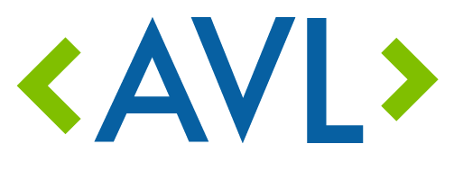

I'm a student
As a student at Asheville-Buncombe Technical Community College in the Software and Web Development A.A.S. Program, I’ve been on the President’s list every semester since I started attending.
I'm also a member of the Phi Theta Kappa Honor Society
Code for Asheville

I'm an active member of Code for Asheville, a community volunteer civic technology organization.
I am an editor for the bimonthly newsletter and write the section covering news from other Code for America brigades
I participated in the effort to petition the Asheville City Council for Police Accountability Through Data Transparency, helping to collect nearly 1000 signatures from the community and disseminating information to the local press
WordPress

I am redesigning the website for a local glass artist in WordPress
In addition to this website, I also keep a Wordpress blog to document my learning and compile lists of my favorite resources
Rails

In a break between classes, I took a class on Ruby on Rails
I find it really cool and exciting and can't wait to learn more! I'm currently working with an adjunct professor at my school to redesign the look of his Rails website
JavaScript

I am teaching myself JavaScript in my off time and really enjoy it
I'm currently working on Wes Bos's JavaScript 30 course